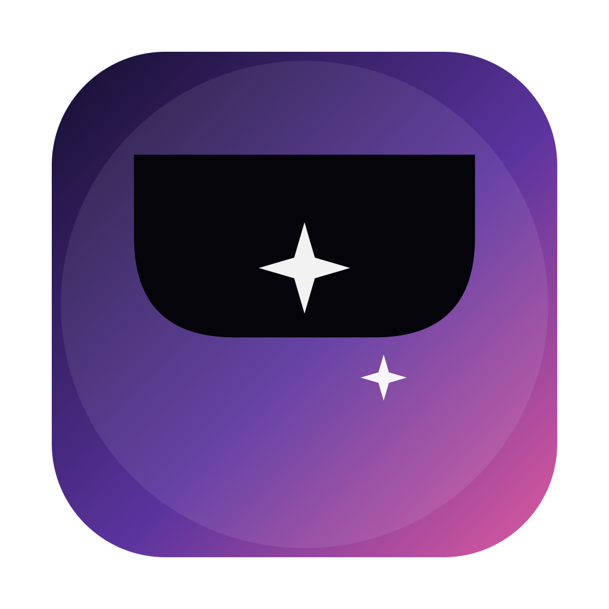

Now playing
Playback controls, album artwork, a visualizer and synced lyrics when they are available.

A dynamic notch for Mac, with elegant widgets for the desktop and lock screen.
Roundoff turns the space around your Mac’s notch into a helpful everyday hub. It brings music, calendar events, reminders, weather and connected-device information closer at hand, while also offering polished widgets away from the notch.
Playback controls, album artwork, a visualizer and synced lyrics when they are available.
Upcoming calendar events and reminders displayed right where they are easy to notice.
Weather, battery and Bluetooth-device updates in a compact, glanceable format.
Customizable desktop and lock-screen widgets, plus a camera mirror and handy system controls.
Since it is now only compatible with MacOS, I am planning to release it to iPadOS, Windows, visionOS and iOS.